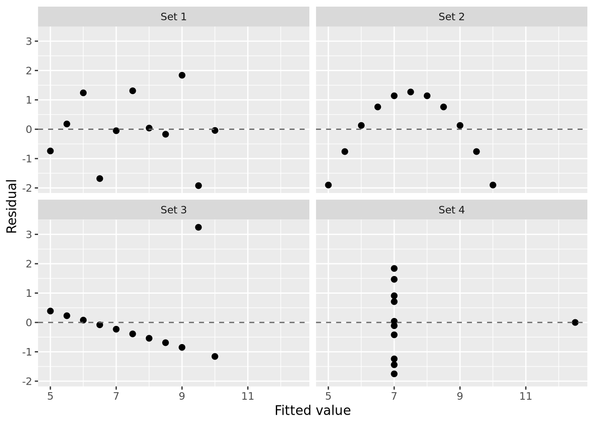
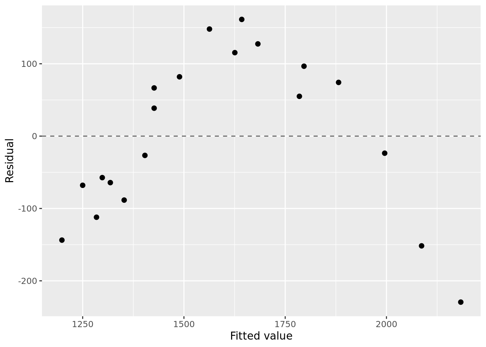

In the last section we discused cases where regression models can go wrong due to overfitting - fitting to noise rather than signal in the data. However, there are many other pitfalls that can arise in regression analysis. Many of these pitfalls arise from violations of the assumptions underlying the linear model framework (see Section 1.4 and Section 3.2 for a reminder of how and why we made these assumptions). Therefore, it is important to routinely check the validity of these assumptions when fitting regression models. The most common assumptions to check are: - Linearity: the relationship between predictors and response is linear. - Homoscedasticity: the variance of the errors is constant across all levels of the predictors. - Normality: the errors are normally distributed. - Independence: the errors are independent of each other.
Moreover, there aare other issues not as directly related to these assumptions that can also affect regression analysis, such as: - Influential points: individual data points that have a disproportionate impact on the model fit. - Multicollinearity: high correlation between predictor variables that can destabilise estimates. - Extrapolation: making predictions outside the range of the observed data. - blind model selection: using automated procedures without considering scientific context. - overfitting: fitting to noise rather than signal in the data. In this section, we will discuss how to diagnose these issues using residual plots and other diagnostic tools, as well as strategies for addressing them when they arise.
5.0.1 The importance of checking residuals: Anscombe’s quartet
Anscombe’s quartet is a classic reminder that identical regression summaries can mask radically different data patterns. Each dataset below has the same \(n\), mean \(x\), mean \(y\), correlation, and the same fitted regression line, yet the residual plots tell very different stories.
library(dplyr)
Attaching package: 'dplyr'
The following objects are masked from 'package:stats':
filter, lag
The following objects are masked from 'package:base':
intersect, setdiff, setequal, union
Here we can see from the initial scatter plots, the four datasets have very different structures. In more complicated datasets, these differences may not be as obvious. Residual plots can help us see these differences more clearly:
ggplot(anscombe_aug, aes(x = .fitted, y = .resid)) +geom_point(size =2) +geom_hline(yintercept =0, linetype ="dashed", color ="gray40") +facet_wrap(~ set, ncol =2) +labs(x ="Fitted value", y ="Residual")

5.1 Residuals as diagnostic tools
How can we check whether the assumptions of a linear regression model are met? One of the most common approaches is to examine the residuals of the model. As a reminder, the residuals are the differences between the observed values and the predicted values from the model:
5.1.1 Residual
The residual for observation \(i\) in a regression model is defined as \[e_i = y_i - \hat{y}_i\] where \(e_i\) is the residual for observation \(i\), \(y_i\) is the observed value, and \(\hat{y}_i\) is the predicted value from the model.
We used residuals in Section 2.2.5 to estimate the parameters of the linear model, but they can also be used to diagnose potential issues with the model fit. Since residuals encode the information about what the model has not captured about the data (i.e the information that remains - is ‘residual’ - after fitting the model), examining them can reveal patterns that reveal how our model fails to capture important aspects of the data (e.g. nonlinearities, nonconstant variance, outliers, etc.).
5.1.2 Residuals in the Olympic cholesterol data
The OLYMPIC dataset records fat intake (mg) and cholesterol (mg/L) for 20 athletes. A simple linear model leaves a curved pattern in the residuals.
library(ggplot2)olympic <-read.delim("Data/OLYMPIC.txt")olympic_lm <-lm(CHOLESTEROL ~ FAT, data = olympic)olympic$resid <-resid(olympic_lm)ggplot(olympic, aes(x = FAT, y = CHOLESTEROL)) +geom_point(size =2) +geom_smooth(method ="lm", se =FALSE, linewidth =0.8)
`geom_smooth()` using formula = 'y ~ x'
ggplot(olympic, aes(x = FAT, y = resid)) +geom_hline(yintercept =0, linetype ="dashed", color ="gray40") +geom_point(size =2) +labs(y ="Residual")
The systematic curve in the residuals indicates that a straight-line model is missing structure in the data.
5.1.3 Extracting residuals and broom::augment()
We saw in Section 2.2.3 how to extract residuals using the resid() function, or by indexing our linear model object with lm$residuals. Another useful way to extract residuals, along with fitted values and other useful information, is to use the broom::augment() function. This function takes a model object as input and returns a data frame that includes the original data along with additional columns for fitted values, residuals, and other diagnostics.
ggplot(olympic_aug, aes(x = .fitted, y = .resid)) +geom_hline(yintercept =0, linetype ="dashed", color ="gray40") +geom_point(size =2) +labs(x ="Fitted value", y ="Residual")

Base R provides a standard diagnostic panel via plot(), while ggresidpanel offers ggplot-based versions of similar plots.
plot(olympic_lm)
# ggresidpanel::resid_panel(olympic_lm)
5.1.5 Common diagnostic plots
Analysing residuals is such a key part of regression analysis that the base R plot() function for linear models automatically produces a set of diagnostic plots. Let’s have a look.
5.2 Residual plots vs predictors and fitted values
Plot residuals against fitted values to check linearity and constant variance; add predictor-specific plots to spot functional-form issues (residual).
diag_mod <-lm(mpg ~ wt + hp + am, data = mtcars)par(mfrow =c(1, 2))plot(diag_mod, which =1) # residuals vs fittedplot(mtcars$wt, resid(diag_mod), xlab ="wt", ylab ="Residuals")
par(mfrow =c(1, 1))
5.3 Diagnosing nonconstant variance and nonlinearity
Funnel shapes or curved trends in residual plots suggest heteroskedasticity or missing curvature; consider transformations or adding interactions/polynomials.
5.4 Assessing normality of residuals
Use Q-Q plots and compare \(t\)- and \(p\)-values to Normal reference.
Transformations can stabilise variance or linearise relationships; for strictly positive \(Y\), consider Box-Cox transformations to guide power choices.
MASS::boxcox(diag_mod, plotit =TRUE)
5.7 Handling outliers and influential observations
Investigate data quality first (entry errors, unusual units).
If influential points are real, fit with and without them to assess robustness; report how conclusions change.
Prefer model adjustments (functional form, variance stabilisation) over automatic deletion; document any exclusions explicitly.